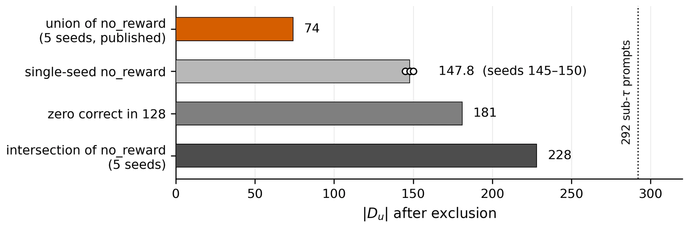
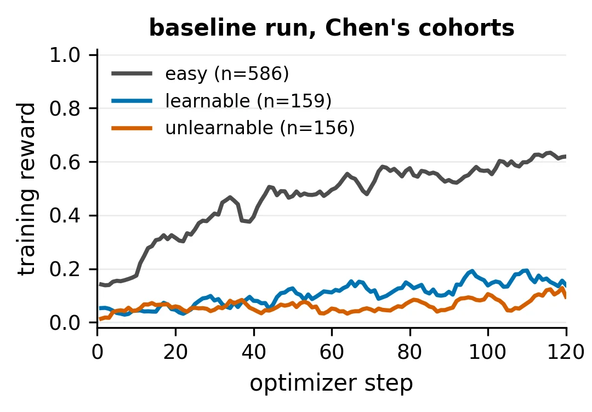
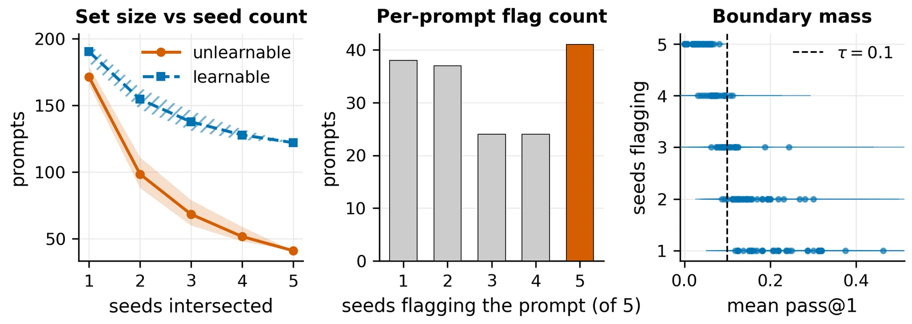
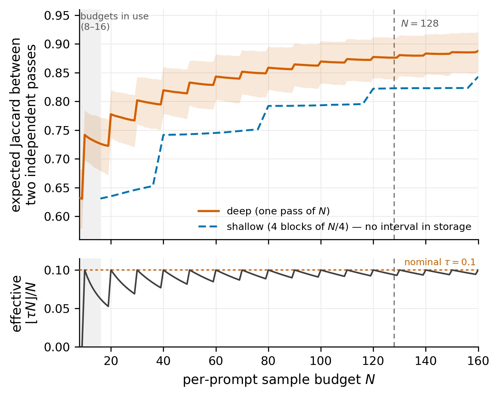
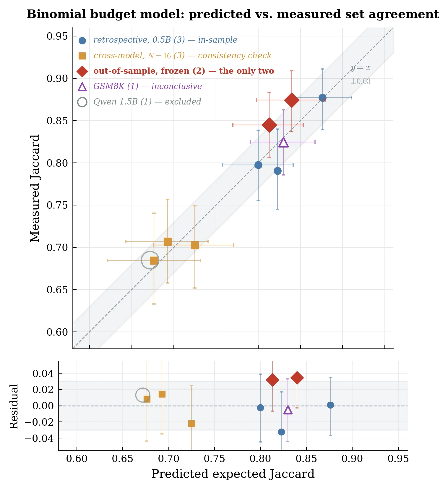
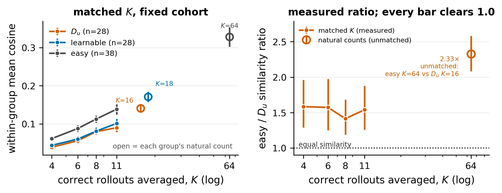
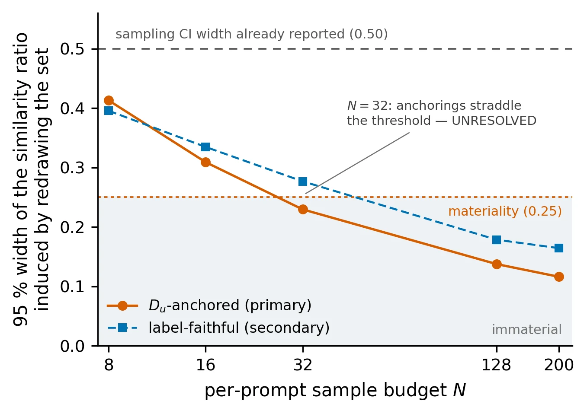

Department of Robotics and Mechatronics Engineering, University of Dhaka
NeurIPS 2026 Workshop: Transitioning from Pre-Training to Post-Training
*Correspondence to Shifat E. Arman (shifatearman@du.ac.bd).

Reinforcement learning with verifiable rewards (RLVR) is a central tool for improving reasoning in post-training. Recent work reports that some hard prompts stay “unlearnable”: they occasionally produce a correct solution but barely improve during training, which has been linked to low gradient similarity and a possible representation failure. We revisit this phenomenon and ask a prior question: is the set of prompts used to support the claim measured reliably?
Difficulty labels are estimated from a limited number of sampled responses, and combining them across seeds can change which prompts are selected rather than simply reduce noise.
Key findings:
The slow-learning phenomenon survives our reanalysis, but both the prompts used to define it and the evidence used to explain it require more careful measurement.
Prompt difficulty has become an operational quantity in RLVR. Methods use a model's empirical success rate to decide which prompts to replay, filter, route, reweight, or give extra training effort, and difficulty is also used to probe the limits of RLVR itself. Most strikingly, Chen et al. (2026) identified hard prompts that occasionally succeed yet barely improve, called them unlearnable, and connected their behavior to lower within-group gradient similarity.
All of these uses depend on identifying hard prompts reliably. Difficulty is estimated from sampled responses, so the same prompt can land on either side of a threshold across repeated evaluations even when the model is unchanged. We treat the aggregation rule and the rollout budget as part of the measurement, and ask when a prompt-level trainability label is stable enough to support a scientific claim.
We reproduce the unlearnability study of Chen et al. (2026) and keep its published cohorts, threshold, and verifier.
| Component | Configuration |
|---|---|
| Model | Qwen2.5-0.5B trained with GRPO, G = 8 rollouts per prompt, five independent seeds. |
| Data | 1,023 prompts from MATH; the original answer verifier, unmodified. |
| Cohorts | The published easy, learnable, and unlearnable groups; difficulty threshold τ = 0.1. Du denotes the set produced by the published unlearnability construction. |
| Set membership | N = 128 evaluation rollouts per prompt; independent sets compared by Jaccard similarity. |
| Gradients | N = 200 initial-policy rollouts; each prompt-level gradient averages its correct rollouts. |
| Uncertainty | 95% bootstrap intervals, resampling prompts at the level appropriate to each statistic. |
Our run is not a byte-for-byte rerun. The key difference is a 1,024-token generation cap instead of the original 5,120, which we test directly on the evaluation side; the full constant-by-constant audit is below.

The three published groups stay clearly separated throughout training, but the Du group is not flat. Reward slopes per 100 optimizer steps:
The Du interval excludes zero: these prompts improve at roughly one third of the learnable rate while staying at a much lower reward level.
We use the slope, not the terminal reward, because GRPO drops a prompt from the update once its sampled rewards have zero variance, so the prompts still active late in training are not the same prompts as early on. Throughout, “unlearnable” refers to the published label, not to a claim that these prompts cannot improve.
To separate training variation from the aggregation rule, we fix a common candidate pool: evaluating all 1,023 prompts 128 times on one reference checkpoint leaves 292 prompts at or below τ = 0.1. From these same candidates:
no_reward in any of the five runs, keeps 74;no_reward in all five runs keeps 228;
What fails is the estimator, not the target. For a fixed policy with true success probability p(x), the set Dτ = {x : p(x) ≤ τ} is well defined. But requiring a prompt to be labeled difficult in every independent run means that, as runs are added, only prompts almost guaranteed that label survive, pushing the retained set toward p(x) = 0. The no_reward exclusion then removes exactly those prompts. The procedure does not converge to Dτ; it converges to a degenerate outcome of the aggregation rule. Pooling the same rollouts into one deeper estimate avoids this.
“No reward was observed in training” is not the same as “unsolvable”: of the 218 prompts removed by the no_reward criterion, 116 are solved at least once in a later N = 128 evaluation.
To remove training variation entirely, we evaluate the same checkpoint twice, changing only the sampled rollouts. At N = 32 the two evaluations agree at Jaccard 0.798, versus 0.751 across independently trained seeds: resampling one fixed model reproduces about 81% of the apparent cross-seed disagreement. A binomial model of the threshold decision predicts the same-model agreement to within 0.004.
A longer generation cap does not explain the movement either. Re-evaluating all prompts with 5,120 instead of 1,024 tokens cuts truncation from 9.6% to 3.2%, yet the two sets agree at 0.898, no less than two passes at the same cap (0.877).
Table: Key robustness controls.
| Control | Comparison | Result | Interpretation |
|---|---|---|---|
| Same-model resampling | fixed checkpoint vs. cross-seed, N = 32 | 0.798 vs. 0.751 | Most apparent cross-seed disagreement can arise from evaluation sampling alone. |
| Token-cap sensitivity | 1,024 vs. 5,120 tokens | 0.898 Jaccard | Set movement is no larger than the measured repeatability scale. |
| Equal-cost allocation | one N = 128 pass vs. 4×32 | 0.877 vs. 0.791 | A deeper estimate is more reproducible at the same rollout cost. |
Spend the budget deeply, not in shallow passes. With the same 128 rollouts per prompt, one deep estimate thresholded once agrees across repeats at Jaccard 0.877, while four blocks of 32 intersected agree at only 0.791 (difference +0.086 [+0.038, +0.135]). Both rules use the same effective threshold, ⌊0.1 × 128⌋/128 = ⌊0.1 × 32⌋/32 = 0.09375, so the gain comes from allocation, not from extra compute.
Predicting reproducibility. With N rollouts, a prompt with success probability p is flagged with probability qN(p) = Pr(K ≤ ⌊τN⌋), where K ~ Binomial(N, p). We estimate the distribution F of latent success probabilities from the pooled N = 128 evaluation with the Kiefer–Wolfowitz nonparametric MLE, which accounts for the noise in observed pass rates, and predict the agreement of two independent evaluations:

For Qwen2.5-0.5B on MATH at τ = 0.1:
The 0.90 and 0.95 budgets lie beyond the N = 128 fitting range. These numbers depend on how many prompts sit near the threshold, so they do not transfer to other models, datasets, or thresholds. What transfers is the procedure for computing them.
Table: Predicted Jaccard agreement at representative budgets (deep, single-pass rule).
| N rollouts per prompt | 8 | 16 | 32 | 64 | 128 | 256 | 512 |
|---|---|---|---|---|---|---|---|
| Predicted Jaccard | 0.6322 | 0.7265 | 0.7998 | 0.8413 | 0.8759 | 0.9022 | 0.9171 |

We froze and timestamped predictions for two budgets that had not yet been measured, then generated 212,784 new responses:
| Budget | Frozen prediction | Measured |
|---|---|---|
| N = 40 | 0.8131 [0.7699, 0.8533] | 0.8450 [0.8063, 0.8833] |
| N = 64 | 0.8397 [0.7980, 0.8792] | 0.8742 [0.8369, 0.9091] |
Both measurements fall inside their frozen intervals. The model underpredicts by about 0.03 in both cases, which is conservative: it recommends slightly more sampling, not less.
Set size alone is not enough. A null model that gives every prompt the same success probability matches the number of flagged prompts by construction but misses the measured Jaccard by 0.19–0.53, while the distributional model misses by only 0.008–0.032. What matters is how prompt probabilities are spread around the threshold.
Table: Retrospective and cross-model consistency checks. Cross-model rows reuse the pass their distribution was estimated from, so they are consistency checks rather than independent validation; the Qwen2.5-1.5B row (greyed) is an excluded diagnostic.
| Model / rule | Measured | Predicted | Error |
|---|---|---|---|
| Qwen2.5-0.5B, one pass N = 32 | 0.7977 | 0.8000 | +0.0023 |
| Qwen2.5-0.5B, one pass N = 128 | 0.8770 | 0.8759 | −0.0011 |
| Qwen2.5-0.5B, four blocks of 32 | 0.7906 | 0.8228 | +0.0322 |
| Qwen2.5-0.5B, two blocks of 16 | 0.7028 | 0.7248 | +0.0220 |
| Llama-3.2-3B, two blocks of 16 | 0.6844 | 0.6763 | −0.0081 |
| Llama-3.2-3B v2, two blocks of 16 | 0.7070 | 0.6926 | −0.0144 |
| Qwen2.5-1.5B, two blocks of 16 | 0.6849 | 0.6718 | −0.0131 |

The gradient explanation compares how similar per-prompt gradients are within each group, but each prompt-level gradient averages its correct rollouts, and hard prompts have far fewer: in the N = 200 cohort, a median of 8 for Du versus 65 for easy prompts.
Every matched level (K = 4, 6, 8, 11) lies below the unmatched ratio and above one, so matching weakens the separation substantially without eliminating it. Matching also selects: at K = 11 only 28 of the 71 Du prompts remain, and they are the easier ones, so this shows sensitivity to sample count, not a corrected full-cohort estimate.

Exposure starvation. With G = 8, a prompt only updates the policy when its sampled rewards differ. Du prompts contribute on 2.14 steps per run, versus 3.13 for learnable and 5.26 for easy prompts. The gap is real, but none of the 156 prompts in the exposure cohort is fully starved across all five runs, and 22.4% receive at least the learnable group's mean exposure while still improving slowly.
GRPO normalization. If reward-std normalization suppressed hard prompts, Du updates would be smaller. The opposite holds: when a prompt does contribute, the mean 1/σ scale is 2.836 for Du and 2.426 for easy prompts, about 17% larger. The asymmetry is in how often an update forms, not in its scale.
Content starvation, where rewarded trajectories carry weak learning signal, remains possible; we cannot test it because the training-time responses were not stored. The cause of the slow-learning effect is still unresolved.
Does a noisy difficulty rule make difficulty-aware RLVR ineffective? We train five seeds under two neighboring constructions that remove very different amounts of usable training signal, 5.0% versus 27.6% after GRPO's zero-variance filter, alongside size-matched random-removal controls. The resulting models differ by less than one held-out accuracy point. The experiment cannot resolve effects that small, so this is not evidence of equivalence, but it bounds our claim: a large change in the reported set need not produce an equally large change in training. Our conclusion is about measurement and inference, not a claim that every method using noisy difficulty signals must fail.
We audited the effective configuration from the actual training and evaluation paths: of 47 effective constants, 30 match the original and the 17 below differ. The generation cap matters most, since it affects hard prompts more than easy ones; its evaluation-side effect is tested above, but our training-dependent magnitudes should not be read as an exact reproduction of the original configuration. All runs used a single NVIDIA RTX 3090 Ti (24 GB).
| Configuration constant | Ours | Original |
|---|---|---|
| Training | ||
| Dataset name | simplelr_qwen_level1to4_sub1k | simplelr_qwen_level1to4 |
| Maximum response length | 1,024 | 5,120 |
| Train batch size | 32 | 256 |
| PPO mini-batch size | 16 | 64 |
| PPO micro-batch size | 2 | 32 |
| Log-probability micro-batch size | 4 | 128 |
| Micro rollout batch size | 128 | 1,024 |
| Tensor parallelism | 1 | 2 |
| GPUs per node | 1 | 4 |
| Rollout GPU memory utilization | 0.45 | 0.75 |
| Total epochs | 12 | 50 |
| Save frequency | 40 | 20 |
| Test frequency | 100,000 | 5 |
| Validation batch size | 200 | 1,000 |
| Evaluation | ||
| Test data | Training subset used here | Original test split |
| Maximum generation length | 1,024 | 5,120 |
| GPU memory utilization | 0.60 | 0.75 |
We revisited the unlearnability phenomenon in RLVR and found a more nuanced result. The affected prompts improve at roughly one third of the learnable rate rather than not at all, but the prompts used to define them are far less stable than the effect itself. The published aggregation rule does not consistently recover a fixed-threshold set, and finite-sample evaluation explains much of the apparent disagreement across training seeds.
We provide a way to determine how much evaluation reproducible difficulty assignment requires, and validate its predictions at previously unmeasured budgets. The gradient-similarity difference proposed to explain unlearnability shrinks substantially when estimator sample count is matched, although a residual gap remains. The lesson is not that unlearnability disappears, but that low-budget difficulty labels are unreliable for classifying individual prompts as “unlearnable,” or for supporting mechanistic claims built on that classification.
@inproceedings{chakma2026unlearnable,
title={Unlearnable, or Unmeasured? On the Reliability of Difficulty Labels in RLVR},
author={Chakma, Chandak and Sakib, Syed Nazmus and Haque, Nafiul and
Arman, Shifat E.},
booktitle={NeurIPS 2026 Workshop: Transitioning from Pre-Training to Post-Training},
year={2026}
}